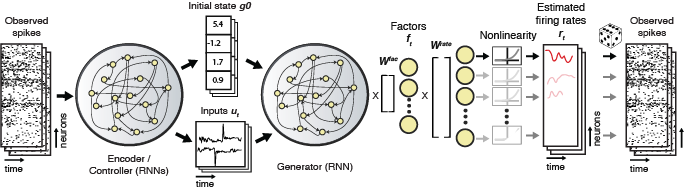

Loading the trained LFADS model parameters¶
Loading the model_params¶
After the LFADS run has finished, you will need to have LFADS write the model parameters to disk in a file called lfadsOutput/model_params, as described here. If you used the run queue to automatically launch all of your runs, you can skip this step as it was taken care of for you after training was completed.
model_params is an HD5 file that contains all of the model parameters. To load these, each LFADS.Run provides a method run.loadModelTrainedParams() that will return an instance of LFADS.ModelTrainedParameters. This instance will have many fields, corresponding to the set of parameters learned by LFADS.
List of model trained parameters¶
Below is an annotated list of the properties found within the ModelTrainedParameters instance, along with the size of each parameter relative to hyperparameters specified in the corresponding RunParams.
For reference, here is the schematic of an LFADS model:

Read-in from spikes to input factors¶
| Name | Description | Size |
|---|---|---|
| x_to_infac_W | readin alignment weights, mapping from counts to input factors | nDatasets x 1 cell of nNeuronsThisDataset x c_factors_dim |
| x_to_infac_b | readin alignment biases to input factors | nDatasets x 1 cell of 1 x c_factors_dim |
Initial condition encoder (forward)¶
| Name | Description | Size |
|---|---|---|
| ic_enc_fwd_t0 | forward IC encoder prior on t0 | 1 x c_ic_enc_dim |
| ic_enc_fwd_gru_xh_to_gates_ru_W | forward IC encoder GRU, mapping input+hiddens to gates r and u, weights | (c_ic_enc_dim + factors_dim) x (2 * c_ic_enc_dim) |
| ic_enc_fwd_gru_xh_to_gates_ru_b | forward IC encoder GRU bmapping input+hiddens to gates r and u, biases | 1 x (2*c_ic_enc_dim) |
| ic_enc_fwd_gru_xrh_to_c_W | forward IC encoder GRU mapping input, r, and hidden to candidates (weights) | (c_ic_enc_dim + c_factors_dim) x c_ic_enc_dim |
| ic_enc_fwd_gru_xrh_to_c_b | forward IC encoder GRU mapping input, r, and hidden to candidates (bias) | 1 x c_ic_enc_dim |
Initial condition encoder (reverse)¶
| Name | Description | Size |
|---|---|---|
| ic_enc_rev_t0 | reverse IC encoder prior on t0 | 1 x c_ic_enc_dim |
| ic_enc_rev_gru_xh_to_gates_ru_W | reverse IC encoder GRU, mapping input+hidden to gates r and u, weights | (c_factors_dim + c_ic_enc_dim) x (2*c_ic_enc_dim) |
| ic_enc_rev_gru_xh_to_gates_ru_b | reverse IC encoder GRU bmapping input+hidden to gates r and u, biases | 1 x (2*c_ic_enc_dim) |
| ic_enc_rev_gru_xrh_to_c_W | reverse IC encoder GRU mapping input+r+hidden to candidates (weights) | (c_ic_enc_dim + c_factors_dim) x c_ic_enc_dim |
| ic_enc_rev_gru_xrh_to_c_b | reverse IC encoder GRU mapping input+r+hidden to candidates (bias) | 1 x c_ic_enc_dim |
Initial condition g0¶
| Name | Description | Size |
|---|---|---|
| prior_g0_mean | Mean parameter in prior on initial condition g0 | 1 x c_ic_dim |
| prior_g0_logvar | Logvar parameter in prior on initial condition g0 | 1 x c_ic_dim |
| ic_enc_to_posterior_g0_mean_W | Weights for mean parameter in posterior of the initial condition g0 | (2*c_ic_enc_dim) x c_ic_dim |
| ic_enc_to_posterior_g0_mean_b | Bias for mean parameter in posterior of the initial condition g0 | 1 x c_ic_dim |
| ic_enc_to_posterior_g0_logvar_W | Weights for logvar parameter in posterior of the initial condition g0 | (2*c_ic_enc_dim) x c_ic_dim |
| ic_enc_to_posterior_g0_logvar_b | Bias for logvar parameter in posterior of the initial condition g0 | 1 x c_ic_dim |
| g0_to_gen_ic_W | mapping from g0 to generator initial condition, weights | c_ic_dim x c_gen_dim |
| g0_to_gen_ic_b | mapping from g0 to generator initial condition, bias | 1 x c_gen_dim |
Controller encoder (forward)¶
| Name | Description | Size |
|---|---|---|
| ci_enc_fwd_t0 | forward controller prior on t0 | 1 x c_ci_enc_dim |
| ci_enc_fwd_gru_xh_to_ru_W | forward controller encoder GRU, mapping input+hidden to gates r and u, weights | (ci_enc_dim + c_factors_dim) x (2*c_ci_enc_dim) |
| ci_enc_fwd_gru_xh_to_ru_b | forward controller encoder GRU, mapping input+hidden to gates r and u, bias | 1 x (2*c_ci_enc_dim) |
| ci_enc_fwd_gru_xrh_to_c_W | forward controller encoder GRU mapping input, r, and hidden to candidates (weights) | (c_ci_enc_dim + c_factors_dim) x c_ci_enc_dim) |
| ci_enc_fwd_gru_xrh_to_c_b | forward controller encoder GRU mapping input, r, and hidden to candidates (bias) | 1 x c_ci_enc_dim |
Controller encoder (reverse)¶
| Name | Description | Size |
|---|---|---|
| ci_enc_rev_t0 | reverse controller prior on t0 | 1 x c_ci_enc_dim |
| ci_enc_rev_gru_xh_to_ru_W | reverse controller encoder GRU, mapping input+hidden to gates r and u, weights | (ci_enc_dim + factors_dim) x (2*c_ci_enc_dim) |
| ci_enc_rev_gru_xh_to_ru_b | reverse controller encoder GRU, mapping input+hidden to gates r and u, bias | 1 x (2*c_ci_enc_dim) |
| ci_enc_rev_gru_xrh_to_c_W | reverse controller encoder GRU mapping input, r, and hidden to candidates (weights) | (c_ci_enc_dim + c_factors_dim) x c_ci_enc_dim) |
| ci_enc_rev_gru_xrh_to_c_b | reverse controller encoder GRU mapping input, r, and hidden to candidates (bias) | 1 x c_ci_enc_dim |
Controlller RNN¶
| Name | Description | Size |
|---|---|---|
| con_gengru_x_to_ru_W | controller GenGRU, mapping input to gates r+u, weights | (c_ci_enc_dim * 2 + c_factors_dim) x (2*c_con_dim) |
| con_gengru_h_to_ru_W | controller GenGRU, mapping hidden to gates r+u, weights | c_con_dim x (2*c_con_dim) |
| con_gengru_h_to_ru_b | controller GenGRU, mapping hidden to gates r+u, weights | 1 x (2*c_con_dim) |
| con_gengru_x_to_c_W | controller GenGRU, mapping input to candidates, weights | (c_ci_enc_dim * 2 + c_factors_dim) x c_con_dim |
| con_gengru_rh_to_c_b | controller GenGRU, mapping r+hidden to candidates, bias | 1 x c_con_dim |
Controller output co¶
| Name | Description | Size |
|---|---|---|
| prior_ar1_logevars | autoregressive prior on controller outputs | 1 x c_co_dim |
| prior_ar1_logatau | autoregressive time constant prior on controller outputs | 1 x c_co_dim |
| con_co | prior on controller output | 1 x c_con_dim |
| con_to_posterior_co_mean_W | mapping from controller to mean parameter of co, weights | c_con_dim x c_co_dim |
| con_to_posterior_co_mean_b | mapping from controller to mean parameter of co, biases | 1 x c_co_dim |
| con_to_posterior_co_logvar_W | mapping from controller to logvar parameter of co, weights | c_con_dim x c_co_dim |
| con_to_posterior_co_logvar_b | mapping from controller to logvar parameter of co, biases | 1 x c_co_dim |
Generator RNN¶
| Name | Description | Size |
|---|---|---|
| gen_gengru_x_to_ru_W | generator GRU, mapping from input to gates r+u, weights | c_co_dim x (2*c_gen_dim) |
| gen_gengru_h_to_ru_W | generator GRU, mapping from input to gates r+u, weights | c_gen_dim x (2*c_gen_dim) |
| gen_gengru_h_to_ru_b | generator GRU, mapping from input to gates r+u, biases | 1 x (2*c_gen_dim) |
| gen_gengru_x_to_c_W | generator GRU, mapping from input to candidates, weights | c_co_dim x c_gen_dim |
| gen_gengru_rh_to_c_W | generator GRU, mapping from r+hidden to candidates, weights | c_gen_dim x c_gen_dim |
| gen_gengru_rh_to_c_b | generator GRU, mapping from r+hidden to candidates, biases | 1 x c_gen_dim |
Generator output¶
| Name | Description | Size |
|---|---|---|
| gen_to_factors_W | mapping from generator to factors, weights | c_gen_dim x c_factors_dim |
| factors_to_logrates_W | readout alignment weights | nDatasets x 1 cell of c_factors_dim x nNeuronsThisDataset |
| factors_to_logrates_b | readout alignment biases | nDatasets x 1 cell of 1 x nNeuronsThisDataset |
Loading model_params for Lorenz example¶
We can load the model trained parameters for our multi-dataset stitching run as follows. Note that all of the entries associated with the controller and inferred inputs to the generator are missing, as we trained without inferred inputs with c_co_dim == 0.
>> mtp = rc.findRuns('all', 1).loadModelTrainedParams() ans = ModelTrainedParams with properties: Read-in from spikes to input factors x_to_infac_W: {3x1 cell} x_to_infac_b: {3x1 cell} Initial condition encoder (forward) ic_enc_fwd_t0: [64x1 single] ic_enc_fwd_gru_xh_to_gates_ru_W: [128x72 single] ic_enc_fwd_gru_xh_to_gates_ru_b: [128x1 single] ic_enc_fwd_gru_xrh_to_c_W: [64x72 single] ic_enc_fwd_gru_xrh_to_c_b: [64x1 single] Initial condition encoder (reverse) ic_enc_rev_t0: [64x1 single] ic_enc_rev_gru_xh_to_gates_ru_W: [128x72 single] ic_enc_rev_gru_xh_to_gates_ru_b: [128x1 single] ic_enc_rev_gru_xrh_to_c_W: [64x72 single] ic_enc_rev_gru_xrh_to_c_b: [64x1 single] Initial condition g0 prior_g0_mean: [64x1 single] prior_g0_logvar: [64x1 single] ic_enc_to_posterior_g0_mean_W: [64x128 single] ic_enc_to_posterior_g0_mean_b: [64x1 single] ic_enc_to_posterior_g0_logvar_W: [64x128 single] ic_enc_to_posterior_g0_logvar_b: [64x1 single] g0_to_gen_ic_W: [] g0_to_gen_ic_b: [] Controller encoder (forward) ci_enc_fwd_t0: [] ci_enc_fwd_gru_xh_to_ru_W: [] ci_enc_fwd_gru_xh_to_ru_b: [] ci_enc_fwd_gru_xrh_to_c_W: [] ci_enc_fwd_gru_xrh_to_c_b: [] Controller encoder (reverse) ci_enc_rev_t0: [] ci_enc_rev_gru_xh_to_ru_W: [] ci_enc_rev_gru_xh_to_ru_b: [] ci_enc_rev_gru_xrh_to_c_W: [] ci_enc_rev_gru_xrh_to_c_b: [] Controlller RNN con_gengru_x_to_ru_W: [] con_gengru_h_to_ru_W: [] con_gengru_h_to_ru_b: [] con_gengru_x_to_c_W: [] con_gengru_rh_to_c_W: [] con_gengru_rh_to_c_b: [] Controller output co prior_ar1_logevars: [] prior_ar1_logatau: [] con_co: [] con_to_posterior_co_mean_W: [] con_to_posterior_co_mean_b: [] con_to_posterior_co_logvar_W: [] con_to_posterior_co_logvar_b: [] Generator RNN gen_gengru_x_to_ru_W: [] gen_gengru_h_to_ru_W: [128x64 single] gen_gengru_h_to_ru_b: [128x1 single] gen_gengru_x_to_c_W: [] gen_gengru_rh_to_c_W: [64x64 single] gen_gengru_rh_to_c_b: [64x1 single] Generator output gen_to_factors_W: [8x64 single] factors_to_logrates_W: {3x1 cell} factors_to_logrates_b: {3x1 cell}
The recurrent connectivity weight matrix of the c_gen_dim==64 GRU generator RNN is given by mtp.gen_gengru_rh_to_c_W:

And the per-dataset readout matrices mapping factors to neurons’ log(rates) are given by mtp.factors_to_logrates_W: